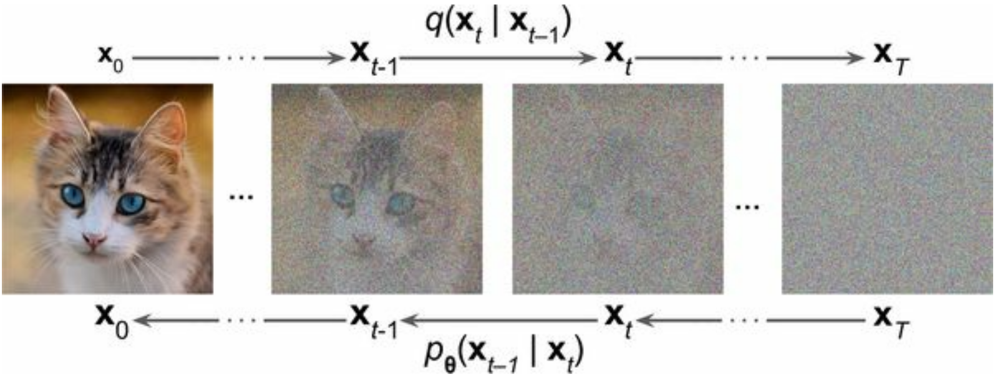

DAT255: Deep learning engineering
Lecture 24 – Guided generation
Generating samples from a decoder model
With the trained decoder model in place, we can finally generate new (unseen) images:
- Step 0:
Draw random pixel values from a normal distribution - Steps 1 to \(\sim\) 4000:
Sequentially run the decoder to remove noise

Properties of diffusion models:
- Easy to train
- Superb quality of results
- Slow to generate new samples

Modern diffusion models
The newest and best image generation models are variants of latent diffusion:
Run the diffusion in latent space, rather than pixel space
To construct the latent space, use a variational autoencoder:


Conditional generation
So far we generated data starting from entirely random noise: We do unconditional sampling.
Outputs are realistic representations of training data
- But we can’t control what output we get.
Enter guided diffusion:
Condition the generation on additional input data (class, text prompt, …)

Conditional generation
The conditional generation of models like stable diffusion is complicated, but relies mainly on two things:
- Encoding the input prompt through a language model, and concatenating with input to the denoising network
- Cross-attention layers allowing denoising network to attend to prompt tokens
Training is done on pairs of images and descriptions, where the descriptions are needed to align text embeddings with concepts in latent space
Open-source diffusion models
Training diffusion models is beyond the expectation for this course, but we can still try them out.
For instance through Keras Hub:
import keras_hub
height, width = 512, 512
task = keras_hub.models.TextToImage.from_preset(
"stable_diffusion_3_medium",
image_shape=(height, width, 3),
dtype="float16",
)
prompt = """
A NASA astraunaut riding an
origami elephant in New York City
"""
task.generate(prompt)
Exploring the latent space
Knowing how text embeddings work, we can not only use prompts to generate the desired output, but also add negative prompts to avoid certain output:
task.generate(
{
"prompts": prompt,
"negative_prompts": "blue color",
}
)
Exploring the latent space
Since the prompt embeddings live in a continuous vector space, we can interpolate between distinct concepts (= fun)
However, the interpolation method matters. Prefer spherical linear interpolation:


Interpolating between prompts

A friendly dog looking up
in a field of flowersA horrifying, tentacled creature
hovering over a field of flowersInterpolating between prompts
prompt_1 = "A cute dog in a beautiful field of lavander colorful flowers "
prompt_2 = prompt_1.replace("dog", "cat")
Interpolating in latent space
We can also interpolate between two noise components from the same prompt, and with spherical interpolation, do a full circle:
prompt = "Beautiful sea sunset, warm light, Aivazovsky style"
Hugging Face
Open-Source AI Cookbook